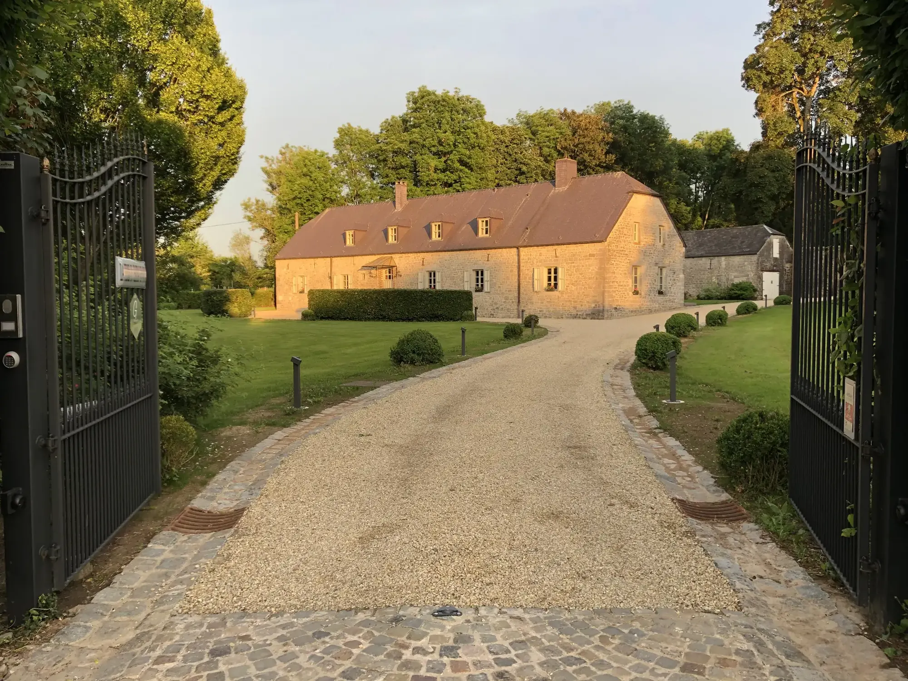
La Ferme duChâteau de Soumoy
Une ferme authentique entièrement restaurée, dans le domaine du château, à quelques minutes des lacs de l'Eau d'Heure. Pour 12 à 14 personnes.
- 12–14 personnes
- 4 chambres
- 3 salles de bain
- 1 terrain de tennis
- 4 épis
Des beaux volumes, du calme et une terrasse plein sud.
Au cœur d'une des plus belles régions de Wallonie : de grandes pièces, du confort, une terrasse exposée sud inondée de soleil et un jardin privatif. Votre séjour sera sportif ou pas, certainement nature et reposant, avec des balades à pied ou à vélo autour des lacs et dans les forêts.
« Petites ou grandes bulles, bienvenue. »
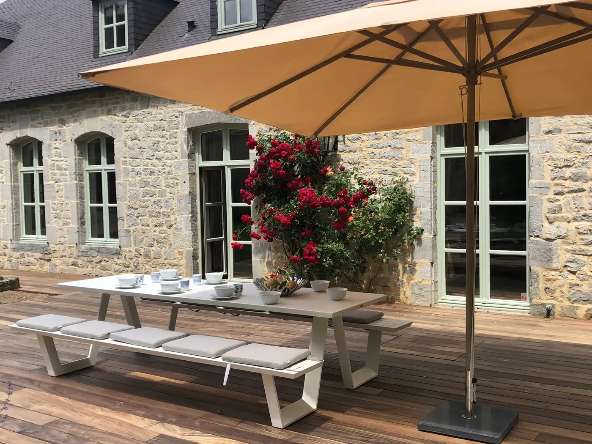
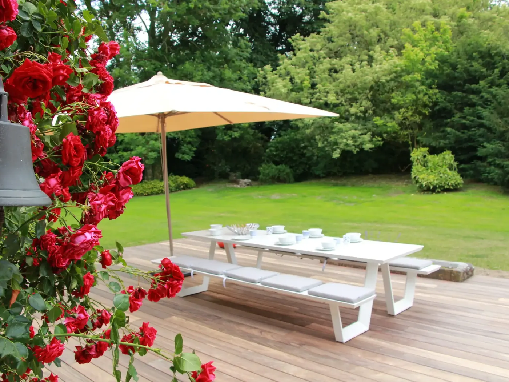
La maison
Séjour avec poêle, salle à manger pour toute la tablée, cuisine équipée, salle de détente avec baby-foot, bibliothèque.
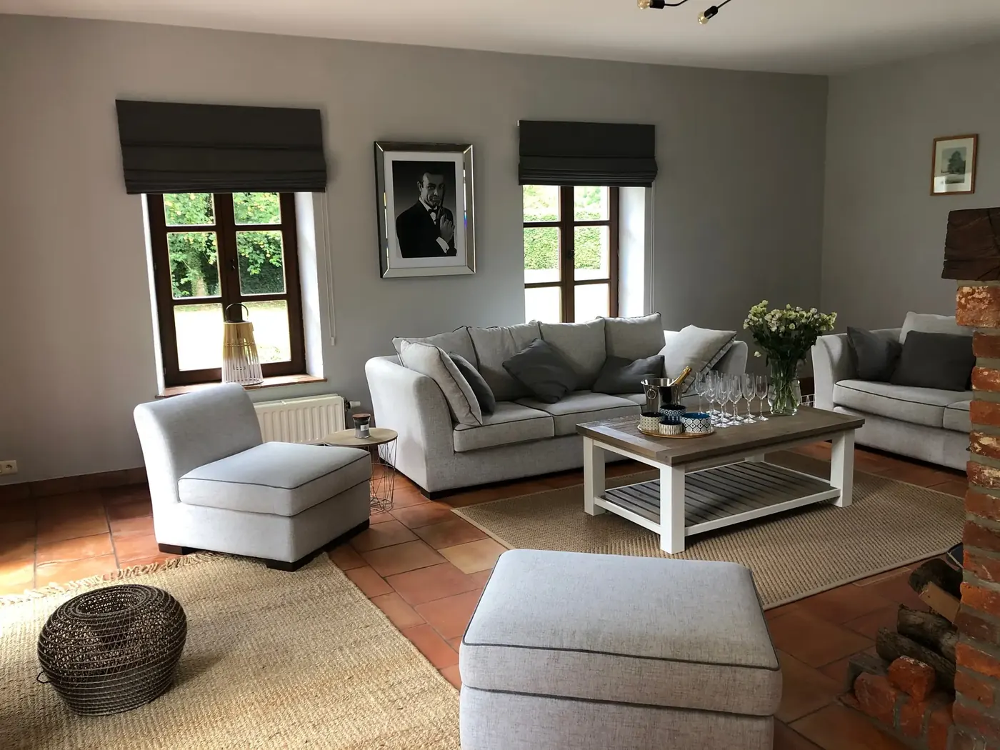
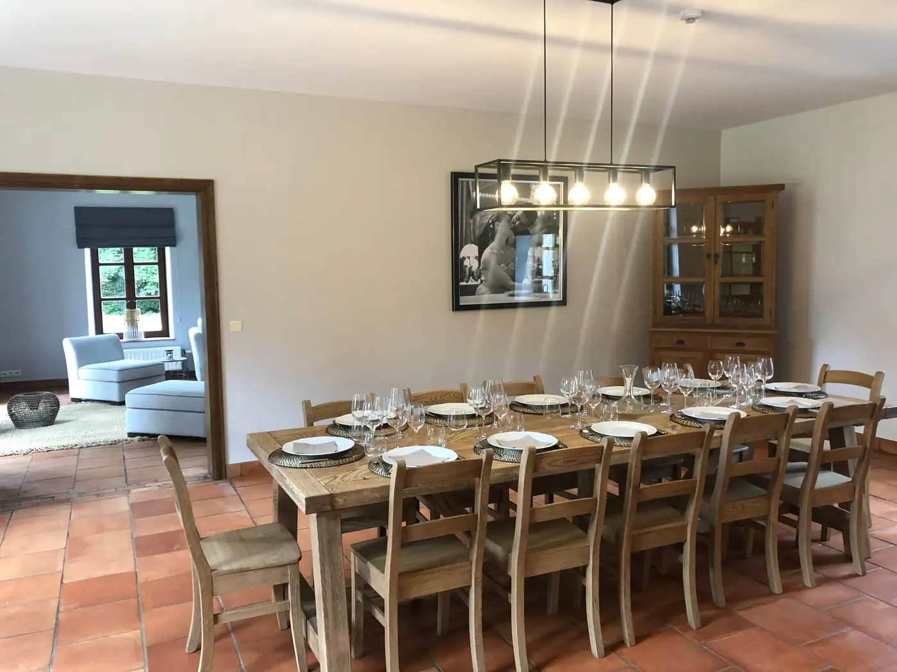
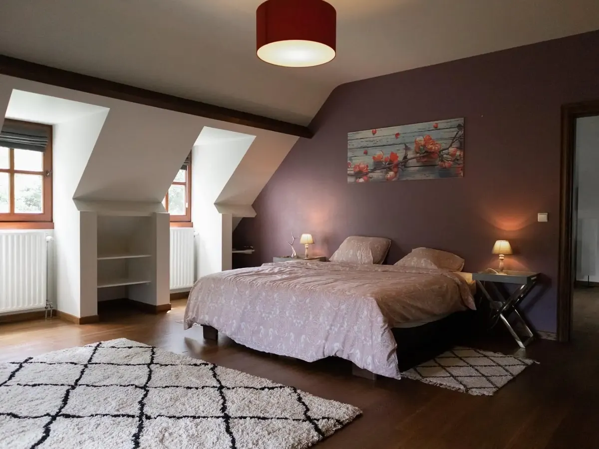
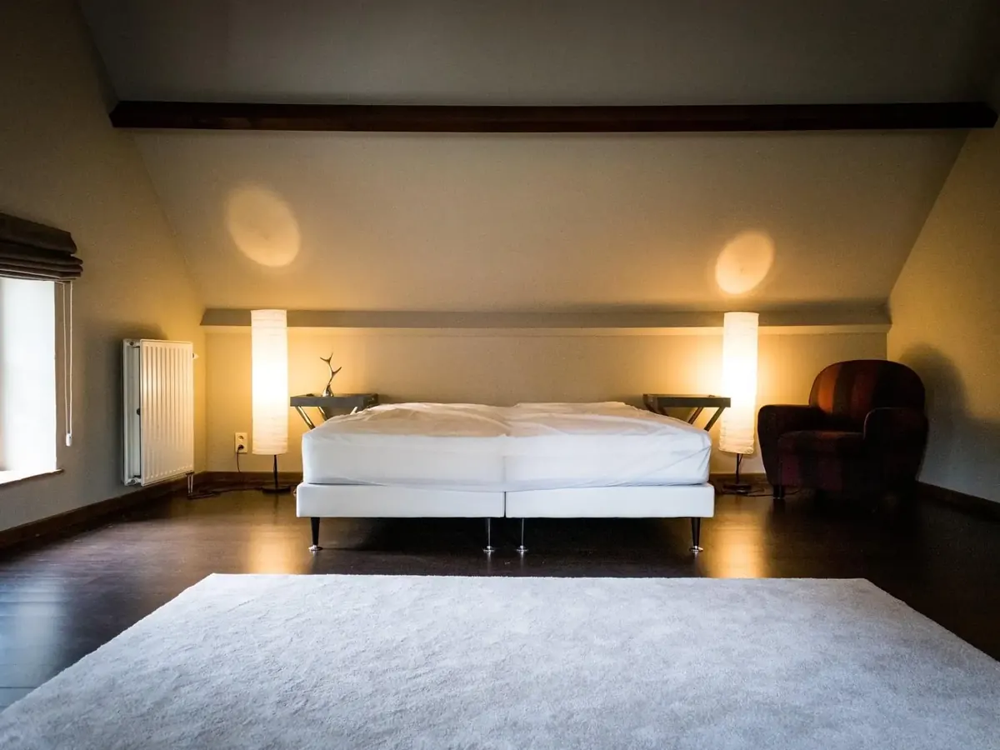
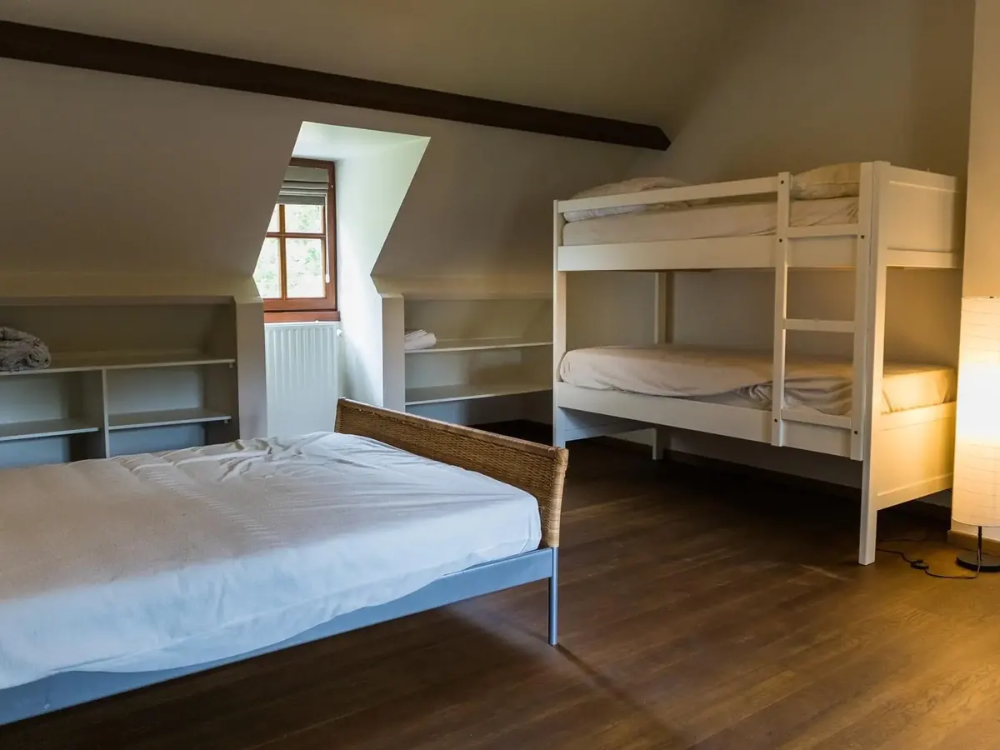
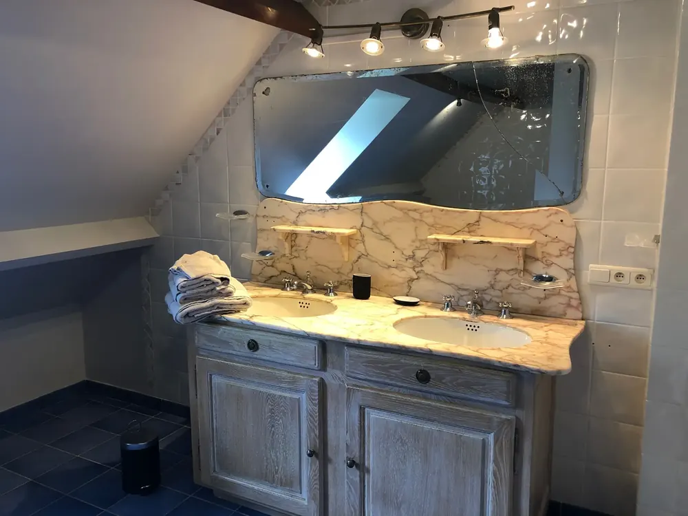
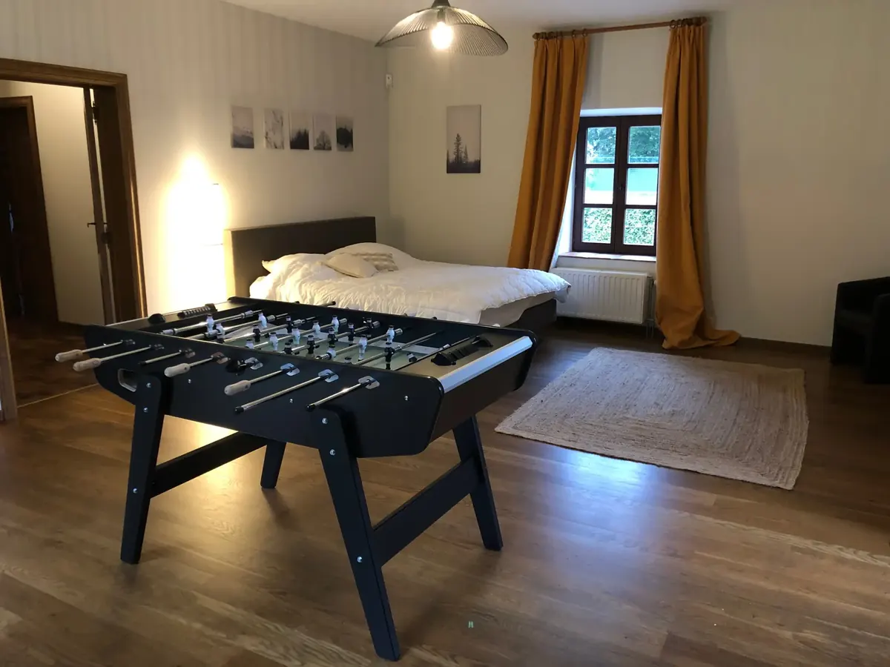
Chambre 1
2 lits doubles
Chambre 2
1 lit double, 2 lits simples, 1 lit bébé
Chambre 3
1 lit double, 2 lits superposés
Chambre 4
2 lits simples
Ils y ont séjourné.
5 sur 5 sur Google, sur 10 avis.
Tarifs 2026
Prix de la location pour toute la maison. Séjour de 2 nuits minimum, charges incluses.
| Séjour | Basse saison | Moyenne | Haute |
|---|---|---|---|
| Week-end | 750 € | 900 € | 1 100 € |
| Long week-end | 900 € | 1 050 € | 1 250 € |
| Midweek | 1 050 € | 1 150 € | 1 350 € |
| Semaine | 1 250 € | 1 400 € | 1 700 € |
Week-ends de fête1 200 € les 2 nuits, 1 350 € les 3 nuits.
Nettoyage150 €. Draps de lit et essuies de bain à emporter.
VélosLocation sur place : 20 € par semaine et par vélo.
Vos dates, en deux clics.
Choisissez l'arrivée et le départ : la formule et le tarif de la saison s'affichent tout de suite.
Un terrain de tennis, rien que pour vous.
Raquettes et balles de ping-pong sont à disposition. Dehors aussi : barbecue, salon de jardin, chaises longues, balançoire, trampoline, toboggan, bac à sable et panier de basket.
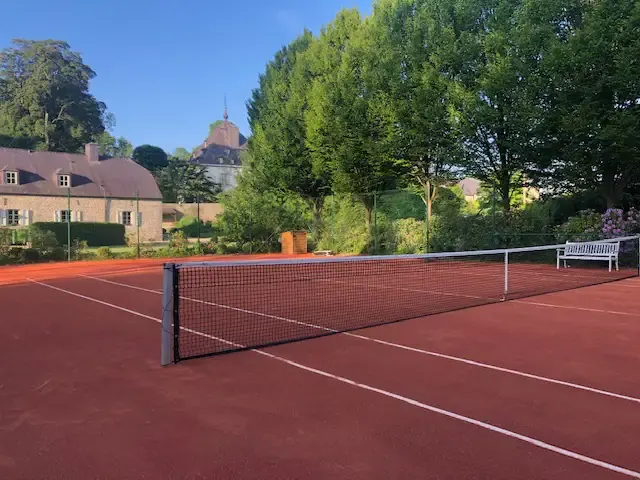
Tout est prévu
Pour une famille, une bande d'amis ou un week-end entre générations.
Dehors
- Terrain de tennis
- Terrasse exposée sud
- Jardin clôturé
- Barbecue, salon de jardin
- Balançoire, trampoline, toboggan
Dedans
- Poêle, bibliothèque, bureau
- Baby-foot, table de ping-pong
- Jeux de société
- Wi-Fi, télévision, chaîne hi-fi
- Climatisation
Cuisine
- Lave-vaisselle, four, micro-ondes
- Machine à café, bouilloire
- Raclette, pierrade, fondue
- Lave-linge et sèche-linge
Bébé et accès
- Lit, chaise et baignoire bébé
- Table à langer, parc
- Parking privé couvert, garage
- Local à vélos
- 1 animal accepté · non-fumeur
Autour de la ferme, les lacs et les bois.
Soumoy est un petit village de Cerfontaine, à deux pas des barrages de l'Eau d'Heure : tennis, ski nautique, vélo, golf, accrobranche, voile.
- Rivièresur place
- Forêt, pêche, randonnée, RAVeL1 km
- Lacs de l'Eau d'Heure2 km
- Équitation, sports nautiques3 km
- Boulangerie, restaurants, marché3 km
- Golf4 km
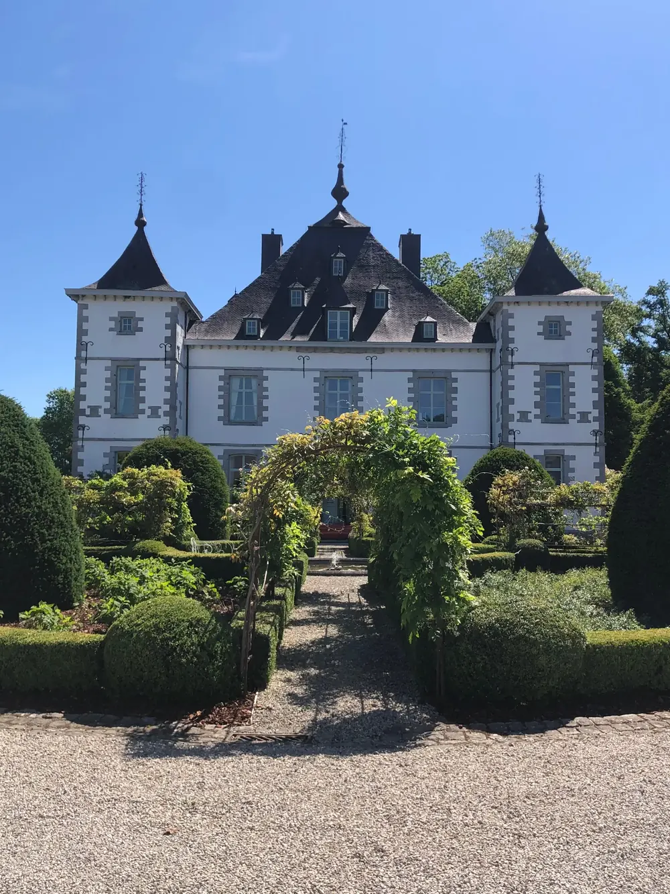
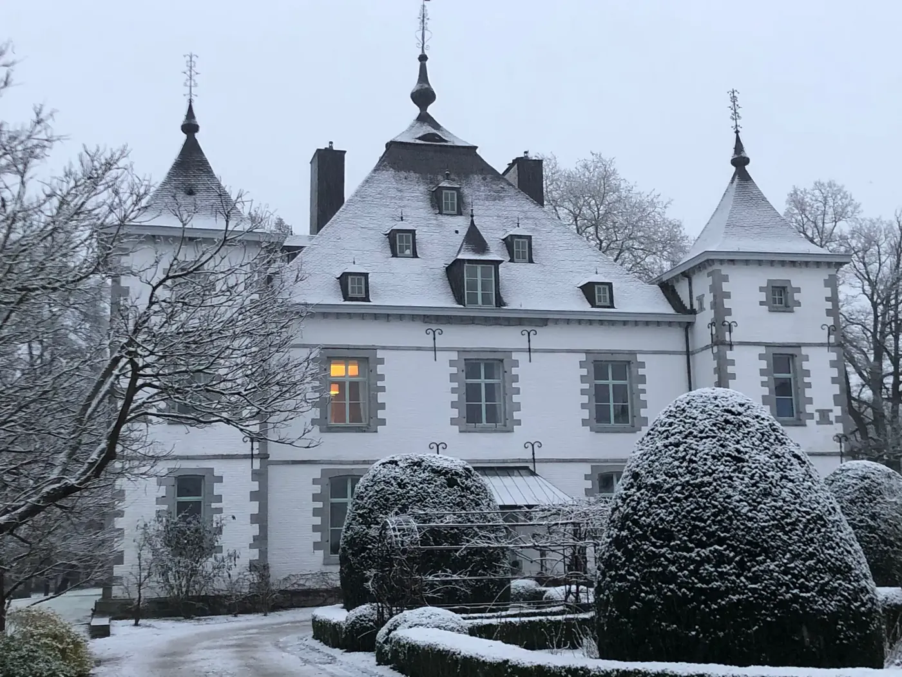
Fabian et Sophie vous accueillent.
Une famille de six, avec quatre enfants, qui aime le sport et la nature et s'est installée à Soumoy pour ça. Le gîte est fait pour les grands groupes, et reste cosy pour une famille.
Téléphone
0477 44 40 51Adresse
Rue de Daussois 1A, 5630 Soumoy (Cerfontaine)
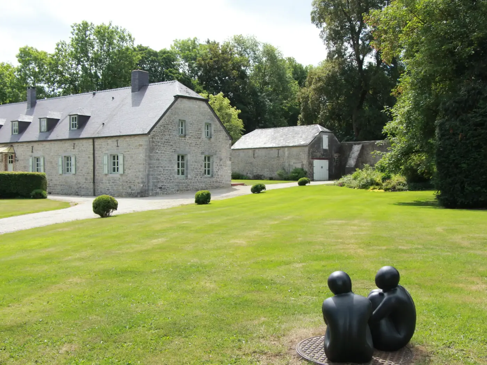
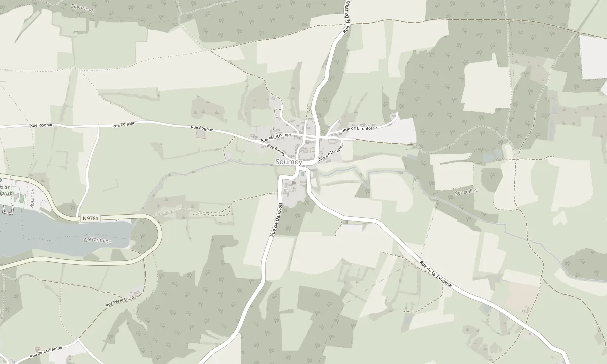
Itinéraire © OpenStreetMap